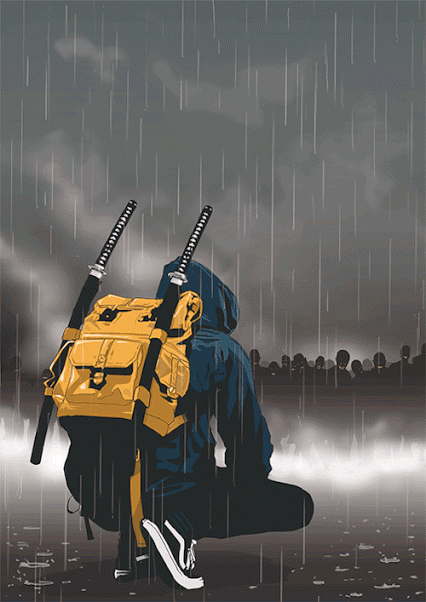

Aleix Ramirez
LITERALMENTE SOY YO.
Soy Aleix Ramirez o tambien RP como me querais llamar Soy RP y hoy era un día lluvioso en la ciudad y acababa de salir del cine después de ver una película de terror. Decidí caminar hacia mi casa en lugar de tomar el autobús, a pesar de la lluvia. Mientras caminaba por una calle oscura, noté algo extraño en el ambiente. De repente, escuché unos ruidos extraños y vi a algunas personas caminando de manera extraña hacia mí. Cuando se acercaron más, me di cuenta de que eran zombies. Aterrorizado, busqué refugio en un callejón cercano. Recordé que mi abuelo, quien había sido un maestro de artes marciales japonesas, me había regalado dos katanas auténticas hace un par de años. Tomé las katanas y me preparé para luchar, recordando las lecciones de mi abuelo. Los zombies se acercaron cada vez más, pero me mantuve firme, usando mis katanas para defenderme. A pesar de mi inexperiencia, logré defenderme gracias a mi valentía y determinación. Finalmente, los zombies comenzaron a disminuir en número y logré escapar del callejón. Agradecido de estar vivo, decidí honrar a mi abuelo y su legado practicando artes marciales para estar mejor preparado para futuros desafíos. Desde aquel día, me convertí en un defensor de la ciudad, siempre dispuesto a proteger a mis seres queridos de cualquier peligro que pudiera aparecer.